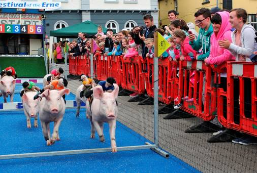
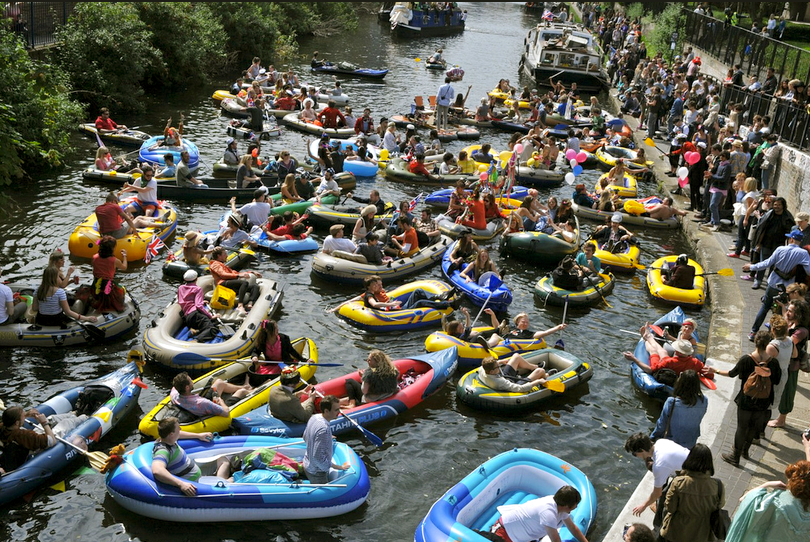
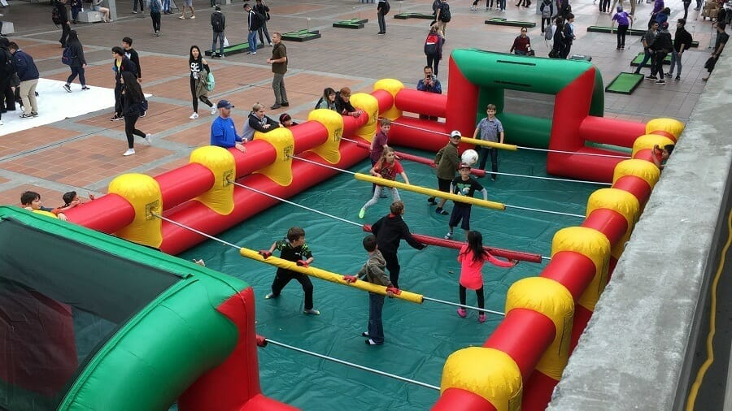
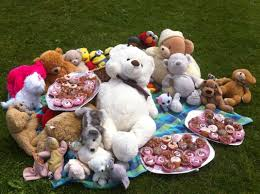

Belturbet, Co. Cavan is a small town full of life and heritage. Let's explore some of the events that take place in this town steeped in 400 years of history.
The Festival of the Erne in Belturbet is well known as one of the largest festivals of it's kind in the region. It hosts a great variety of programmes for all the family. From pig racing to a bonny baby competition, the festival has something to offer to all age groups. The festival runs from Thursday the 30th of July till Monday the 3rd of August, 5 days of family fun! Events include:
Come down to the jetty and watch the colourful floats provided by the businesses in Belturbet. Boats kindly sponsered by the local skippers and crews and visiting friends. Music and entertainment will be provided by DJ Brian Gold. Barbecue and refreshments will be available. It is truly a spectacle for all the family.
Play the game that's taking alternative sport to a new human sized football level! Play Foosball on Main Street, Belturbet.
Take part in the many competitions taking place acroos the town such as the, Skittles Competition and Row Boat Racing Event. Relax and play some golf on the beautiful greens at the Clubhouse. Take part in the Bonny and Baby Competition, or head down to Morrissey Park to enjoy a fantastic firework display. Got the little ones with you? Don't worry, head down to the Teddy's Bears Picnic, or hunt for some treasure in the Children's Treasure Hunt. Out for a good time? Why not have a Ladies Night out in the Windows Bar? Enjoy a salsa experience, photo booth, music and a cupcake surpirse. There's load to do for evryone!!
   Belturbet Carnival takes place on the 4th, 5th and 6th of July. Dance the weekend away under the tarpaulin of the "Plais in the Park" Carnival Tent. Big Bands each night and of course don't miss the wedding of the year....can you guess whose tying the knot?